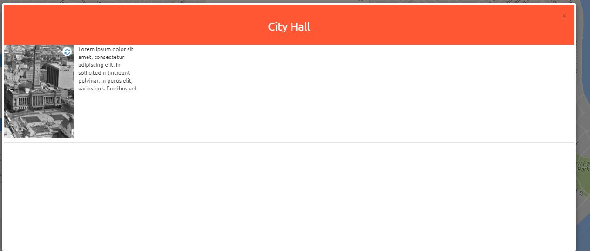
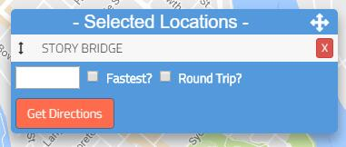
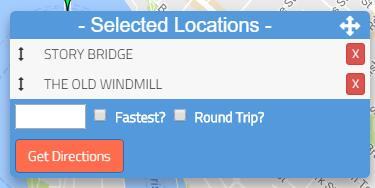

|
|
||
|
|
||
|
Welcome to
|
||
|
|
||
| Please select an interest | ||
At the centre of the page you will see a input box here. Enter a city you like to explore and click ‘use my location’ button to the next step.
Here is the another way to explore locations. Under the input box, you will see 3 differently favourite cities. Hover over these with your mouse to see the different cities options and click to select one:

After you selected you city for exploration, you will see 3 differently interests: Landmarks, Museums and Historical Locations. Hover over these with your mouse to see the different cities options and click to select one:

After you selected your interests, our website will show you the map of the city. You will be able to select locations for relevant information, which will be retrieved from Trove.

Also, you can click into ‘More info’ button to see the articles for specific location.

Step 1 | For the location you are interested in, click the ‘Add Location’ button in the information box:

After you added in the journey list, you will see the location’s name will be displayed at the top of the list. The style of the spot will be also changed.

Step 2 | Added more locations
After you added more locations, the locations’ name will be displayed after your last locations. You can change the order of locations or delete them anytime.

Step 3 | Your journey has been finished!
The map will show a track of the locations you chose, which also provides the distance and duration you need:

At the left of the page, you will see a main menu for you to change your locations and interests as you want: